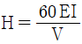
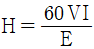
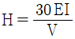
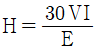

침투비파괴검사기사(구) (2005-03-06 기출문제)
1과목: 침투탐상시험원리
1. 수세성 침투액을 사용할 때 결함 탐상이 안되는 것을 피하기 위해 가장 주의해야 할 점은?
- 과잉 침투액의 세척이 되었는지 확인한다.
- 침투시간이 너무 길지 않았는지 확인한다.
- 유화제의 과량 사용을 피한다.
- 시험품에의 침투후 과도한 세척을 피한다.
(정답률: 알수없음)

2. 침투탐상시험을 실시할 때 침투액 사용전, 부품을 어느 정도 가열하면 어떤 효과가 나타나는가?
- 침투액의 안정도가 증가한다.
- 탐상감도가 감소한다.
- 탐상감도가 증가한다.
- 탐상감도가 변하지 않는다.
(정답률: 알수없음)
3. 부품의 양끝을 베어링이 지지하고 있는 회전체에서 베어링의 손상 여부를 기기를 정지시키지 않고 가동 중에 계속 감시하기에 적합한 비파괴검사법은?
- 방사선투과검사
- 초음파탐상시험
- 와전류탐상시험
- 음향방출시험
(정답률: 알수없음)
4. 다음 재질중 일반적으로 침투탐상시험이 어려운 것은?
- 다공성의 세라믹
- 티타늄
- 고합금강
- 주철재료
(정답률: 알수없음)
5. 침투탐상시험의 유화제 적용에 관한 설명으로 가장 알맞는 것은?
- 유성유화제 적용시 미리 1차 수세를 하여야 한다.
- 수성유화제는 유성유화제보다 반응이 빠르기 때문에 세척을 빠르게 수행해야 한다.
- 수성유화제를 침지법으로 적용하는 경우 5∼30% 정도로 희석 농축하여 사용하는 것이 바람직하다.
- 유성유화제를 분무법으로 적용하는 경우 0.⑤∼5% 정도로 희석 농축하여 사용하는 것이 바람직하다.
(정답률: 알수없음)
6. 유성유화제를 만드는 물의 특성으로 가장 적당한 것은?
- 점성이 높을 것
- 점성이 낮을 것
- 활성도가 낮을 것
- 유화제를 혼탁하게 할 것
(정답률: 알수없음)
7. 매우 지저분하고 표면에 기름이 묻어 있는 부품의 표면처리에는 물을 주원료로 제작된 화학약품의 세척제로 세척한다. 세척후의 후속 조치로서 올바른 것은?
- 용제 세척제로 다시 한번 세척해야 한다.
- 표면에는 어떠한 잔류물도 남아있지 않게끔 다시 완전히 세척해야 한다.
- 표면 개구부에 강한 열을 직접 가하여 잔류물이 남지 않도록 모두 제거시킨다.
- 휘발성 용제 세척제로 다시 한번 세척한다.
(정답률: 알수없음)
8. 0℃ 저온에서 침투탐상시험을 실시코자 할 경우, 어떠한 조치가 필요한가?
- 온도는 침투처리에 영향이 없어 조치가 필요치 않다.
- 검사체를 적정 온도로 가열하고 침투액을 적용한다.
- 검사체를 저온 그대로 하고 침투액을 적정온도로 가열하여 적용한다.
- 0℃ 저온에서는 침투탐상검사 실시를 모두 중단시킨다.
(정답률: 알수없음)
9. 침투탐상시험시 가장 효과적인 전처리 방법을 선정하기 위해 고려되어야 하는 것은?
- 시험체의 재질
- 시험면의 밝기
- 현상방법
- 침투방법
(정답률: 알수없음)
10. 와전류의 특성에 대한 잘못된 설명은?
- 와전류는 전도체 안에서만 존재한다.
- 와전류는 항상 연속적인 회로로 흐른다.
- 와전류는 코일의 가장 가까운 표면에서 가장 강하다.
- 와전류의 침투깊이는 시험주파수와 비례관계를 갖는다.
(정답률: 알수없음)
11. 자분탐상시험과 비교할 때 침투탐상시험을 우선적으로 적용할 수 있는 근본적인 이유는?
- 시험체의 재질에 대한 제한이 적으므로
- 미세한 균열의 검출감도가 우수하기 때문에
- 최종 검사 단계에서 신뢰성이 높기 때문에
- 표면 전처리와 지시모양의 평가가 쉽기 때문에
(정답률: 알수없음)
12. 침투탐상시험은 검사대상물의 표면상태에 따라 영향을 받는다. 다음 중 시험에 해로운 영향을 주는 표면 상태가 아닌 것은?
- 거친 용접부 표면
- 젖은 표면
- 기름기가 있는 표면
- 기계 가공한 표면
(정답률: 알수없음)
13. 속건식 현상제를 상온에서 분무할 경우, 스프레이 노즐은 시험면과 어느 정도의 거리가 적당한가?
- 10∼20㎝
- 25∼30㎝
- 40∼45㎝
- 50∼60㎝
(정답률: 알수없음)
14. 타 침투탐상시험과 비교하여 후유화성 염색침투탐상시험의 단점은?
- 자연광에서 사용이 가능하다.
- 나사부 등 복잡한 부품의 시험에 적용되지 않는다.
- 다른 방법에 비해 침투시간을 단축할 수 있다.
- 휴대가 편리하다.
(정답률: 알수없음)
15. 다음 중 두 장의 판재를 접합한 재료의 접합 경계면의 상태를 판단하는데 유효한 검사법은?
- 누설램파법
- 레이저-초음파법
- 스파클법
- 방치법
(정답률: 알수없음)
16. 다음 중 침투액의 침투성능이 우수한가를 결정하는 2가지 대표적인 특성은?
- 표면장력 및 점성
- 점성 및 접촉각
- 접촉각 및 밀도
- 표면장력 및 접촉각
(정답률: 알수없음)
17. 침투탐상검사시 일반적으로 허용되는 검사체의 표면온도범위는?
- -40℉ ∼ 450℉
- 32℉ ∼ 212℉
- 60℉ ∼ 125℉
- 80℉ ∼ 200℉
(정답률: 알수없음)
18. 다음 침투탐상시험 중 자외선 조사장치를 사용하지 않아도 되는 경우는?
- 수세성 형광침투탐상시험
- 수세성 염색침투탐상시험
- 용제제거성 형광침투탐상시험
- 후유화성 형광침투탐상시험
(정답률: 알수없음)
19. 표면에 오염 물질이 존재함에도 불구하고 침투제 막이 균일하고 일정하게 전 표면에 걸쳐 도포되도록 해줄 수 있는 침투제의 기능을 설명한 것은?
- 표면장력이 낮다.
- 점성이 높다.
- 적심능력이 크다.
- 증발효과가 적다.
(정답률: 알수없음)
20. 고장력 강용접부의 경우 용접완료 후 24~48시간 경과후에 비파괴검사를 실시한다. 그 이유로서 가장 타당한 것은?
- 지연 균열의 발생
- 피로 균열의 발생
- 고온 균열의 발생
- 응력부식 균열의 발생
(정답률: 알수없음)
2과목: 침투탐상검사
21. 배액처리장치, 분무나 담금법이 적용되는 탐상장치는?
- 전처리장치
- 침투처리장치
- 유화처리장치
- 현상처리장치
(정답률: 알수없음)
22. 침투탐상검사에서는 침투액이 금속표면으로 번져 적시는 적심성이 침투액의 침투에 영향을 미치는 중요한 원인이 된다. 적심성에 대한 올바른 설명은?
- 접촉각이 클수록 좋다.
- 접촉각이 작을수록 좋다.
- 침투액의 표면장력이 커야 좋다.
- 침투액의 침투성에 직접적인 영향을 미치지는 않는다.
(정답률: 알수없음)
23. 유화제를 침투액과 구별하기위해 가장 널리 사용되는 착색은?
- 흑색 또는 황색
- 오렌지색 또는 핑크색
- 녹색 또는 백색
- 적색 또는 백색
(정답률: 알수없음)
24. 물로 세척처리를 하는 경우, 현상처리를 효과적으로 하기위한 건조처리의 적용 시기를 설명한 것로 옳은 것은?
- 습식 현상법에서는 세척처리 후에 한다.
- 건식 현상법에서는 현상처리 후에 한다.
- 무현상법에서는 건조처리를 하지 않는다.
- 속건식 현상법에서는 세척처리 후에 한다.
(정답률: 알수없음)
25. 일반적으로 다음 중 어느 형태의 결함이 가장 긴 침투시간을 필요로 하는가?
- 단조 랩(lap)
- 플라스틱에서의 피로균열
- 열처리 균열
- 그라인딩(grinding)균열
(정답률: 알수없음)
26. 시험체 표면에 남아있는 과잉 침투액을 제거한 후 관찰하는 방법으로, 고감도 형광침투액과 함께 사용되는 현상법은?
- 습식현상법
- 건식현상법
- 속건식현상법
- 무현상법
(정답률: 알수없음)
27. 침투탐상검사로 검출이 가능한 결함에 대한 설명으로 올바른 것은?
- 표면 결함은 모두 탐상이 가능하다.
- 표면으로 열려 있는 균열 뿐 아니라 모든 결함을 탐상 될 수 있다.
- 표면 결함도 침투탐상검사로 탐상되지 않는 경우도 있다.
- 표면 및 표면 직하의 결함 탐상이 가능하다.
(정답률: 알수없음)
28. 다음 중 올바른 침투처리방법에 해당되지 않는 것은?
- 에어졸에 의한 스프레이 분사시 검사면 이외에 과잉 분사되지 않게 도포한다.
- 붓칠의 도포를 활용한다.
- 형광침투액은 백색등 아래에서 도포한다.
- 침투액이 건조되지 않도록 한다.
(정답률: 알수없음)
29. 침투액에 필요한 일반적인 특성이 아닌 것은?
- 색채대비나 형광휘도는 낮아야 한다.
- 인화점이 높아야 한다.
- 중성으로 부식성이 없어야 한다.
- 온도 안정성이 있어야 한다.
(정답률: 알수없음)
30. 부피가 큰 시험체를 침투탐상 검사 할 때 비교적 탐상감도가 좋게 나타나도록 하는 현상제는?
- 분말 현상제
- 플라스틱 필름 현상제
- 수 현탁성 현상제
- 휘발성 용제 현상제
(정답률: 알수없음)
31. 전처리 과정에서 너무 심한 기계적인 세척(cleaning)으로 발생될 수 있는 현상은?
- 표면으로 노출된 균열이나 기공의 입구를 막아 침투지시가 나타나지 않을 수 있다.
- 표면에 부착된 오염물질이나 제거되어야 할 물질들이 완전히 제거되지 않을 수 있다.
- 시험체 표면의 과잉 세척으로 침투지시를 만들수 있다.
- 침투탐상검사는 표면의 기계적 세척과는 무관하기 때문에 아무런 변화가 없다.
(정답률: 알수없음)
32. 침투액 및 현상제의 잔류물을 제거하는 후처리 과정은 이 재료가 부품의 다른 재료들과 반응할 경우에 대비하여 꼭 필요한데 이 때의 반응에 의한 결과는 어떻게 되겠는가?
- 불연속 지시
- 부식 현상
- 적절한 표면 장력
- 주위 조건과의 색채 대비
(정답률: 알수없음)
33. 침투액이 결함속으로 침투하는 속도는 온도의 영향을 받기 쉽다. 침투속도에 직접적인 영향을 미치지 않는 것은?
- 표면장력
- 접촉각
- 밀도, 점성
- 침투액 자체의 용해도
(정답률: 알수없음)
34. 대비시험편을 사용하여 세척처리의 적합여부를 조사하는 시험에서 올바른 방법은?
- 한쌍의 대비시험편에 각각 다른 탐상제를 적용하고 그 결함지시모양을 비교한다.
- 한쌍의 대비시험편에 사용중인 탐상제를 동일 조건으로 적용하고 세척처리만 달리하여 각각 비교한다.
- 결함의 크기가 다른 두개의 대비시험편을 한쌍으로 조사해야 한다.
- 한쌍의 대비시험편에 각각 기준 탐상제를 적용하고 그 결함지시모양을 비교한다.
(정답률: 알수없음)
35. 침투탐상시험용 4S B형 대비시험편을 설명한 것 중 틀린것은?
- 시험편 표면에 도금균열을 만들어 사용한다.
- 시험편은 원칙적으로 2개의 1편을 1조로 사용한다.
- 시험편의 도금층 두께는 30μm인 것도 있다.
- 시험편의 재질은 알류미늄판 이다.
(정답률: 알수없음)
36. 침투탐상시험에서 미지의 균열이 나타나 원인을 분석해 본 결과 연마(grinding)를 지나치게 한 것이었다. 이 균열의 형태는?
- 파도모양
- 길고 폭이 넓은 모양
- 격자 무늬 모양
- 별 모양
(정답률: 알수없음)
37. 액상 필름시험(Solution film test)에 의해 아주 미세한 누설 부분이 검출되지 않았다. 다음 중 올바른 이유는?
- 관찰 시간이 너무 짧았다.
- 1차적용에 의한 상태에서 누설용액을 관찰하지 않았다.
- 압력차를 유지하지 않았다.
- 너무 많은 누설 용액을 사용했다.
(정답률: 알수없음)
38. 다음 중 침투탐상검사를 다른 비파괴검사법과 비교하여 장점이 아닌 것은?
- 장비가 저렴하고 간단하다.
- 작업자의 고도의 숙련을 요구하지 않는다.
- 강자성체에도 적용 가능하다.
- 검사시 관찰되는 지시모양이 실제 결함 크기이다.
(정답률: 알수없음)
39. 침투탐상검사는 표면결함을 검출하는 검사법으로서 자분탐상검사와 유사하다. 그 특징은?
- 결함내부의 형상, 크기를 파악할 수 있다.
- 인접결함 또는 근접결함을 분리된 지시모양으로 확연히 구분할 수 있다.
- 다공질 및 비다공질 재료의 결함유무, 위치를 개략적으로 파악할 수 있다.
- 결함폭의 확대율이 높으므로 실제결함 형상과 같은 지시를 얻는다.
(정답률: 알수없음)
40. 다음 중 침투탐상시험으로 검출할 수 있는 일반적인 불연속은?
- 적층(Lamination)
- 핫티어(Hot Tear)
- 비금속 개재물
- 융합불량(Lack of Fusion)
(정답률: 알수없음)
3과목: 침투탐상관련규격
41. KS B 0816(`04년판)에 의한 침투탐상시험시 A형 대비시험편에 관한 내용중 틀린 것은?
- 크기는 50mm x 75mm, 판두께는 8∼10mm
- 재료는 KS D 6701에 규정한 A2024P
- 제작은 분젠버너로 중앙부를 520-530℃로 가열.급냉한다.
- 흠의 깊이는 2.5mm로 중앙부에 가공한다.
(정답률: 알수없음)
42. KS B 0816(`04년판)에서 규정한 시험방법에 대한 분류로서 잘못된 것은?
- 용제제거성 염색침투탐상 - VC
- 후유화성 형광침투탐상 - FB
- 수세성 염색침투탐상 - VA
- 용제제거성 형광침투탐상 - FD
(정답률: 알수없음)
43. ASME Sec.V는 A형 비교시험편의 제작에 관한 설명 중 틀린것은?
- 재질은 알루미늄으로 한다.
- 시험편의 두께는 3/8인치이다.
- 제작당시 크기는 2x3인치이나 나중에 2x1.5인치로 분할한다.
- 인공결함을 만들기 위한 가열 온도는 약 300℉이다.
(정답률: 알수없음)
44. KS B 0816(`04년판)에 따른 침투탐상시험에서 사용중인 물 베이스 유화제의 농도를 굴추계 등으로 측정하여 규정농도에서의 차이가 몇 %이상일 때 폐기하거나 농도를 다시 조정하는가?
- 0.5%
- 1%
- 2%
- 3%
(정답률: 알수없음)
45. ASME Sec.Ⅴ Art.6 침투탐상시험에서 침투시간은 특정 적용시간에 대한 입증시험을 통해 인정된 경우를 제외하고 최소 적용시간은 재료, 재료의 형태, 결함의 종류별로 제시하고 있는데 다음 보기중 침투시간이 가장 긴 것은?
- 강용접부의 균열
- 프라스틱의 균열
- 알루미늄 단조품의 랩
- 세라믹의 기공
(정답률: 알수없음)
46. KS W 0914 항공우주용기기의 침투탐상검사 방법 중 건조에 대한 설명이다. 틀린 것은?
- 건식현상제 또는 비수성현상제를 적용할 때는 현상 전에 피검사체를 건조시켜야 한다.
- 수용성현상제 또는 수현탁성 현상제를 적용하는 경우 현상전에 피검사체를 건조시켜도 무방하다.
- 건조로에 의한 건조의 경우 건조로의 온도는 70℃이하이어야 한다.
- 피검사체에 국부적으로 물이 괴어 있거나 수용액 또는 현탁액이 괴어 있는 상태에서는 건조로에 의한 건조만 요구된다.
(정답률: 알수없음)
47. ASTM E 165에 따라 원자력 부품에 형광침투탐상을 적용할 때 시험체 표면에서 자외선등의 밝기는 어느 값 이상이 되어야 하는가?
- 300㎼/cm2
- 500㎼/cm2
- 700㎼/cm2
- 800㎼/cm2
(정답률: 알수없음)
48. KS B 0816(`04년판)에서 A형 대비시험편의 제조 방법에 관한 내용 중 틀린 것은?
- 판의 중앙부를 분젠버너로 520-530℃로 가열한다.
- 가열면에 냉수를 부어 급냉한다.
- 중앙부에 깊이 1.5mm로 흠을 가공한다.
- 판 두께는 10-15mm로 한다.
(정답률: 알수없음)
49. ASME Sec.Ⅴ Art.6 침투탐상시험의 불순물관리에 관한 설명으로 틀린 것은?
- 황함유량 분석을 위하여 가열할 경우 발생된 증기는 특별히 제거할 필요는 없다.
- 티타늄에 사용되는 모든 탐상제는 불순물 함유량에 대한 증명서를 확보해야 한다.
- 니켈합금을 시험할 경우 모든 탐상제는 황함유량 분석을 실시해야 한다.
- 불순물 관리에 필요한 증명서에는 제조자의 제조번호를 포함하여야 한다.
(정답률: 알수없음)
50. KS W 0914에서 규정하고 있는 유화제의 제거성 점검주기와 관련규정이 올바른 것은?
- 주1회, ASTM 095
- 월1회, ASTM 095
- 주1회, MIL-I-25135
- 월1회, MIL-I-25135
(정답률: 알수없음)
51. MIL I 규격에서 group I은 어느 것을 뜻하는가?
- 용제 제거성 염색침투탐상시험법
- 후유화성 염색침투탐상시험법
- 수세성 염색침투탐상시험법
- 용제 제거성 형광침투탐상시험법
(정답률: 알수없음)
52. ASME Sec.Ⅴ Art.6에 따라 용접부위에 대해 침투탐상시험을 할 때 전처리 과정에서 용접부위와 인접 경계면은 적어도 몇 cm 이내에 있는 오물, 구리스, 녹 등을 제거하도록 규정하고 있는가?
- 1.27cm
- 2.54cm
- 3.81cm
- 5.08cm
(정답률: 알수없음)
53. KS B 0816(`04년판)에 따른 침투지시모양의 분류를 적용하면 라미네이션(Lamination)은 어느 침투지시모양에 속하겠는가?
- 면상 침투지시모양
- 선상 침투지시모양
- 분산 침투지시모양
- 원형상 침투지시모양
(정답률: 알수없음)
54. ASME Sec.Ⅷ Div.1 의 침투탐상시험 중 합격기준에 대한 설명이다. 틀린 것은?
- 선형관련지시는 길이에 관계없이 불합격이다.
- 3/16 inch 이상인 원형관련 지시는 불합격이다.
- 이웃불연속 모서리 사이의 간격이 1/16inch 이하로 분리되어 일직선상에 3개 또는 그이상으로 배열되어 있는 원형판결 지시는 불합격이다.
- 관련지시 모양은 실제의 불연속보다 크게 나타날 수도 있으나, 합격 여부의 판정은 지시모양의 크기를 근거로 나타난다.
(정답률: 알수없음)
55. ASME Sec.V에서 수세성 염색침투탐상시험에 습식현상제를 사용할 때의 시험절차를 바르게 열거한 것은?
- 전처리 →침투제적용 →수세 →현상제적용 →건조 → 관찰
- 전처리 →침투제적용 →유화제적용 →수세 →현상제적용 →건조 →관찰
- 전처리 →침투제적용 →수세 →건조 →현상제적용 → 관찰
- 전처리 →침투제적용 →유화제적용 →수세 →건조 →현상제적용 →관찰
(정답률: 알수없음)
56. 컴퓨터 바이러스에 감염되었을 때의 증상이 아닌 것은?
- 파일의 크기가 커진다.
- 엉뚱한 에러 메시지가 나온다.
- 프로그램의 실행이 되지 않는다
- 컴퓨터의 속도가 빨라진다.
(정답률: 알수없음)
57. 다음 중 정보의 형태와 정보통신 서비스가 잘못 연결된 것은?
- 영상 : TV방송
- 데이터 : 전자 우편
- 화상 : 파일 전송
- 음성 : 음성 원격 회의
(정답률: 알수없음)
58. 디스켓을 포맷할 때 포맷형식을 [시스템파일만 복사]로 선택하였을 때 복사되는 파일명은? (단, 숨겨진 파일 포함)
- COMMAND.COM
- MSDOS.SYS, IO.SYS
- MSDOS.SYS, IO.SYS, COMMAND.COM
- COMMAND.COM, AUTOEXEC.BAT, CONFIG.SYS
(정답률: 알수없음)
59. 다음 중 인터넷 검색엔진의 종류가 아닌 것은?
- Yahoo
- Galaxy
- 심마니
- MIME
(정답률: 알수없음)
60. ROM에 상주하는 마이크로컴퓨터 운영체제내의 작은 프로그램이며, 시스템이 시동될 때 실행되어 주기억장치를 검사하며, 시스템 디스크에 있는 부트(boot)라고 하는 운영체제의 일부분을 RAM에 적재하게 하는 것은?
- 모니터(monitor) 프로그램
- 부트스트랩(bootstrap)
- 마이크로 프로그램(micro program)
- 부트 프로그램(boot program)
(정답률: 알수없음)
4과목: 금속재료학
61. 강의 표면경화 열처리에서 고체 침탄 촉진제로서 가장 많이 사용되는 것은?
- KCN
- KCl
- NaCl
- BaCO3
(정답률: 알수없음)
62. 열처리에서 질량효과라는 것은 무엇을 의미하는가?
- 재료의 크기에 따라 담금질효과가 다르게 나타나는 현상
- 시효처리의 일종으로서 재료가 크면 내부가 더 약한 현상
- 가열시간의 차이에 따라 시효경화가 다르게 나타나는 현상
- 뜨임현상의 일종으로서 뜨임시간이 길면 강도가 작아지는 현상
(정답률: 알수없음)
63. 상업화에 활용되고 있는 FRM(섬유강화금속)에 사용되는 섬유의 종류가 아닌 것은?
- B
- SiC
- C
- Cr2O3
(정답률: 알수없음)
64. 강도와 탄성을 요구하는 스프링강의 조직으로 가장 적당한 것은?
- Martensite
- Sorbite
- Ferrite
- Austenite
(정답률: 알수없음)
65. 활자 합금(type metal)의 주성분으로 맞는 것은?
- Pb - Sb - Sn
- Pu - Zn - As
- Bi - Aℓ- Zn
- Cu - Si - Zn
(정답률: 알수없음)
66. 보통주철의 재질에 대한 설명 중 틀린 것은?
- 보통주철은 성분범위가 C 2.5-4.0%, Si 0.5-3.5%, Mn 0.2-1.0%, P 0.03-0.8%, S 0.01-0.12%이다.
- C는 응고할 때 공정조직의 한 구성 요소인 편상 흑연(flake carbon)을 정출한다.
- C, Si 양이 낮을수록 공정량은 많아지고 주조성은 좋아진다.
- 보통 주철은 냉각속도가 빠를수록 Fe3C 를 정출한다.
(정답률: 알수없음)
67. 탄소강에서 Cementite(Fe3C)란?
- 철에 탄소가 고용된 고용체
- 철과 탄소의 금속간 화합물
- 철과 탄소가 합금되어 단상을 이룬 상태
- 선철에서만 존재하는 고용체
(정답률: 알수없음)
68. Cu를 4% 함유한 Aℓ합금을 고용체로 만든 다음 약 130℃로 유지시켰더니 시간의 경과에 따라 경도가 증가하는 것과 관계가 가장 깊은 것은?
- 가공경화
- 시효경화
- 고온경화
- 분산경화
(정답률: 알수없음)
69. 강철에 포함된 Mn의 영향이 아닌 것은?
- 유동성 증가
- 담금성 양호
- 고온가공 용이
- 경도, 강도 감소
(정답률: 알수없음)
70. 경도시험에서 나타내는 약어 표기가 틀린 것은?
- 비커즈 경도:HV
- 쇼어 경도:HS
- 브리넬 경도:HB
- 로크웰 경도:HL
(정답률: 알수없음)
71. 담금질시 균열이나 비틀림 방지 대책이 아닌 것은?
- 대상부품의 뾰족한 부분을 둥글게 한다.
- 급격한 단면형상을 갖도록 한다.
- 담금질 후 가능한 한 빨리 뜨임 처리하여 잔류응력을 제거한다.
- 필요이상의 고탄소강을 사용하지 않는다.
(정답률: 알수없음)
72. 0.3% 탄소강의 723℃ 선상에서의 초석 α 의 량은 약 몇% 정도 되는가? (공석강의 탄소함량은 0.8% 임)
- 63%
- 79%
- 84%
- 89%
(정답률: 알수없음)
73. 황동(brass)의 설명이 틀린 것은?
- Cu와 Zn으로 된 황색 합금이다.
- 실용적으로는 대략 Zn이 약 30-40% 정도이다.
- Cu와 Sb의 합금을 말한다.
- 주조성, 가공성, 기계적 성질이 좋다.
(정답률: 알수없음)
74. 알루미늄 합금 중 개량처리(modification)의 효과를 가장 기대하는 합금계(실루민)는?
- Aℓ- Co계
- Aℓ- Si계
- Aℓ- Sn계
- Aℓ- Zn계
(정답률: 알수없음)
75. KS재료기호 중 SS400의 KS규격상 명칭은?
- 합금공구강40종
- 일반구조용 압연강재
- 열간압연 스테인리스 강판 및 강대
- 기계구조용 스테인리스 강재
(정답률: 알수없음)
76. 청동합금에 탄성, 내마모성, 내식성 및 유동성 등을 향상시키기 위하여 첨가하는 원소는?
- Pb
- Zn
- P
- Aℓ
(정답률: 알수없음)
77. 18K 금은 Au 의 함유율이 몇 % 정도 인가?
- 60%
- 75%
- 85%
- 90%
(정답률: 알수없음)
78. Al-Cu계 합금에 Si을 첨가하여 유동성이 좋으며, 피삭성, 용접성, 내기밀성이 양호하고 열처리가 가능한 합금은?
- 인코넬
- 라우탈
- 크로멜
- 퍼인바
(정답률: 알수없음)
79. 가단 주철은 열처리 하기 전의 주조상태에서 어떠한 주철상태가 바람직한가?
- 백주철 (white cast iron)
- 회주철 (grey cast iron)
- 반주철 (mottled cast iron)
- 펄라이트 주철 (pearlite cast iron)
(정답률: 알수없음)
80. 다음 중 Muntz metal의 설명이 옳은 것은?
- 20 %의 Zn이 첨가된다.
- α+ β조직이다.
- 상온에서 전연성이 아주 높다.
- 내식성이 크므로 기계 부품에는 사용될 수 없다.
(정답률: 알수없음)
5과목: 용접일반
81. 교류아크 용접기의 1차측 입력이 20[kVA]인 경우 가장 적합한 퓨즈의 용량은? (단, 이 용접기의 전원전압은 200V이다.)
- 100[A]
- 120[A]
- 150[A]
- 200[A]
(정답률: 알수없음)
82. 다음 중 습기가 있는 용접봉을 사용할 경우 해로운 점 설명과 가장 관계가 적은 것은?
- 피복이 떨어지기 쉽고, 아크가 불안정하다.
- 용착금속의 기계적 성질이 나빠진다.
- 기공이나 균열의 원인이 된다.
- 용접기를 손상시킨다.
(정답률: 알수없음)
83. 용접후 용접변형을 교정하기 위한 방법이 아닌 것은?
- 피닝법
- 역변형법
- 얇은 판에 대한 점 수축법
- 후판에 대한 가열후 압력을 주어 수냉하는 법
(정답률: 알수없음)
84. 모재는 전혀 녹이지 않고, 모재보다 용융점이 낮은 금속을 녹여 표면장력(원자간의 확산 침투)으로 접합하는 것을 의미하는 용어는?
- 융접(fusion welding)
- 압접(pressure welding)
- 납땜(brazing and soldering)
- 저항용접(resistance welding)
(정답률: 알수없음)
85. 연강용 피복 아크용접봉 중 내균열성이 가장 좋은 것은?
- 고셀룰로스계
- 티탄계
- 일미나이트계
- 저수소계
(정답률: 알수없음)
86. 논 가스 아크용접의 장·단점 설명으로 틀린 것은?
- 전자세 용접이 가능하다.
- 보호가스나 용제의 공급이 필요하다.
- 용접 전원으로 교·직류를 모두 사용할 수 있다.
- 용접 길이가 긴 용접물은 아크를 중단하지 않고 연속용접을 할 수 있다.
(정답률: 알수없음)
87. 용접부의 기공 발생 방지책 설명으로 틀린 것은?
- 위빙을 하여 열량을 늘리거나 예열을 한다.
- 충분히 건조한 저수소계 용접봉으로 바꾼다.
- 이음 표면을 깨끗하게 하고 적당한 전류로 조절한다.
- 용접속도를 빠르게 조절한 후 용접부를 급냉한다.
(정답률: 알수없음)
88. 아세틸렌 용기의 안전장치에 대한 설명으로 가장 적합한 것은?
- 질소를 가스 안정제로 주입하여 가스의 내부 폭발을 방지한다.
- 용기 상부 또는 하부에 가용 플러그를 장치하여 용기 내의 온도 상승시 녹아 터지도록 한다.
- 다공성 물질과 아세톤에서 모든 위험을 자연적으로 흡수하도록 고안되어 있다.
- 스프링식 안전 밸브가 부착되어 용기압이 올라가면 자동 방출하도록 되어있다.
(정답률: 알수없음)
89. 150㎏f/cm2 의 압력으로 대기압하에는 6,000ℓ가 충전된 산소를 압력이 100㎏f/cm2 될 때까지 사용하였다면 산소 사용량은?
- 1200ℓ
- 1500ℓ
- 1800ℓ
- 2000ℓ
(정답률: 알수없음)
90. 용접시 발생하는 결함인 균열(crack)을 억제하기 위한 방법이 아닌 것은?
- 예열을 한다
- 후열을 한다
- 용접전류를 높인다
- 피닝을 한다
(정답률: 알수없음)
91. 전기저항 점(Spot)용접의 전극(Electrode)재료에 대한 설명으로 틀린 것은?
- 피용접재와 합금되기 어려울 것
- 전기 전도도가 높을 것
- 열전도율이 낮을 것
- 기계적 강도가 클 것
(정답률: 알수없음)
92. 탄산가스 아크 용접에 관한 다음 사항 중 틀린 것은?
- 이음가공에서의 이음 각도공차는 ±5°이내로 하는 것이 좋다.
- 아크 종점에서는 용입이 얕으므로 아크를 신속하게 정지시켜 크레이터의 발생을 막는다.
- 고장력강이나 합금강의 가접은 반드시 저수소계 용접봉을 사용하도록 한다.
- 2차 무부하 전압이 60V 정도인 경우, 콘택트 팁에 와이어가 용착하기 쉽다.
(정답률: 알수없음)
93. 피복금속 아크용접봉 E4316은 어떤 계통의 용접봉인가?
- 저수소계
- 철분수소계
- 철분 산화철계
- 고산화 티탄계
(정답률: 알수없음)
94. 피복 금속 아크 용접봉에 도포(塗布)되는 용제(Flux)의 기능(機能) 설명으로 틀린 것은?
- 특별한 자세(姿勢)의 용접을 쉽게 한다.
- 아크(arc)의 발생, 안전 및 유지를 용이하게 한다.
- 가스를 발생시켜서 대기(大氣)의 침입을 방지한다.
- 적당한 아크 전압과 용융점이 높은 슬랙을 만든다.
(정답률: 알수없음)
95. 납땜시 사용되는 용제(Flux)의 역할로 잘못 설명한 것은?
- 용접중 발생하는 산화물 제거
- 용접부의 인성을 증가
- 용가재의 유동성을 향상
- 모재 표면의 산화 방지
(정답률: 알수없음)
96. 다음 용접 중 TIG 용접에서 모재에 열이 가장 많이 발생하는 가스와 극성은?
- Ar가스, DCRP 용접
- He가스, DCSP 용접
- Ar가스, DCSP 용접
- He가스, DCRP 용접
(정답률: 알수없음)
97. 동 용접이 철강용접에 비해서 어려운 이유가 아닌 것은?
- 열전도율이 낮고 냉각속도가 크다.
- 산화동을 포함한 부분이 순동보다 먼저 용융하여 균열을 일으키기 쉽다.
- 동은 용융 시 산화가 심하며 가스 흡수로 용접부에 기공이 생기는 경우가 많다.
- 수소와 같은 확산이 큰 가스를 석출하며 그 압력으로 약점을 형성한다.
(정답률: 알수없음)
98. 미그(MIG)용접의 장점 설명으로 틀린 것은?
- 수동 아크용접에 비해 용착율이 높다.
- 박판 용접에는 적합하지 않다.
- 티그 용접에 비해 용융속도가 빠르다.
- 탄산가스 아크용접에 비해 스패터 발생이 많다.
(정답률: 알수없음)
99. 피복금속 아크용접에서 아크가 용접의 단위 길이(1㎝)당 발생하는 전기적 에너지 H(Joule/cm)는? (아크 전압은 E Volt, 아크전류를 I 암페어, 용접속도는 V ㎝/min 라 한다.)




(정답률: 알수없음)
100. 다음 용접 중 구리합금의 용접에 가장 적합한 것은?
- 산소 아세틸렌 용접
- 불활성가스 아크용접
- 일렉트로 슬래그용접
- 서브머지드 아크용접
(정답률: 알수없음)